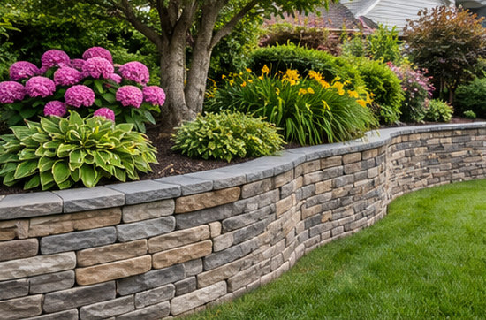

About Us

This website helps visitors explore outdoor improvement ideas and understand the types of landscaping and hardscaping services they may wish to discuss with a local professional.
It is an independent information and lead-generation resource. The website operator is not presented as a contractor performing the services listed here.
What This Website Does
Explains Project Options
Our service pages cover patios, pavers, retaining walls, outdoor cooking features, landscape lighting and other commonly requested projects.
Supports Telephone Enquiries
Visitors can call to discuss their needs. An enquiry may be routed or referred to an independent business rather than answered by the website operator as a service provider.
Separates Information from Services
Project descriptions are general. Availability, site inspection, pricing, materials, contracting and workmanship are the responsibility of any provider a visitor chooses to engage.
Discloses Referrals
The website operator may receive compensation for generating or referring qualifying telephone enquiries. This does not determine whether any particular provider is available.
How a Service Enquiry Works
- Explore: Start with the Services overview or a dedicated guide to pavers or retaining walls.
- Call: Use the telephone number displayed on the site and describe the project and ZIP code.
- Discuss: Where available, an independent provider may answer or follow up about options, qualifications, site assessments and any potential estimate.
- Decide: You are free to compare providers and choose whether to proceed. No quote, appointment or service is guaranteed by this site.
Independent Identity
The landscaping images on this website are newly generated illustrations, not photographs of completed work by the website operator. General subject matter draws on historical landscaping information, but we do not claim the former business's staff, credentials, completed projects or customer testimonials.
Callers should ask any independent provider about coverage, licensing or insurance where relevant, permits, written estimates and the scope of work before agreeing to services.